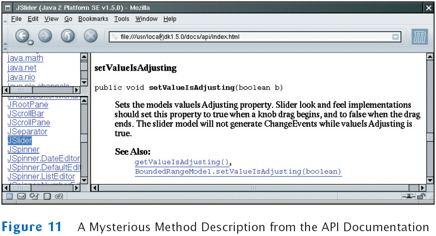

previous
|
start
|
next
Example: A Color Mixer
There are over 50 methods in
JSlider
class and over 250 inherited methods
Some method descriptions look scary

Develop the ability to separate fundamental concepts from ephemeral minutiae
previous
|
start
|
next